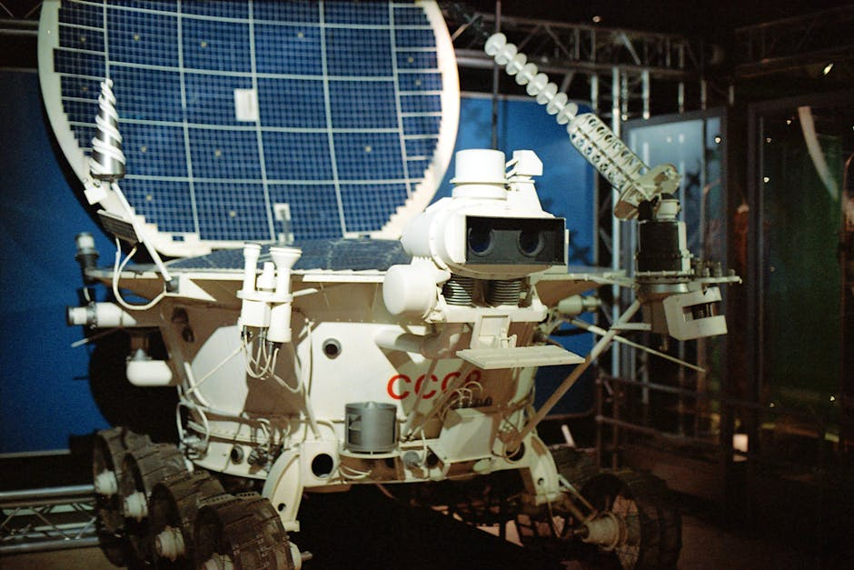

Imagine a world beyond our blue planet, a realm of endless stars, swirling galaxies, and distant worlds waiting to be discovered. For centuries, humanity has gazed at the night sky with wonder, dreaming of venturing into the cosmos. While sending humans to every corner of the universe remains a monumental challenge, we have a brilliant solution: robots! These incredible machines are our eyes, ears, and hands in the vast emptiness of space, pushing the boundaries of exploration further than ever before. From the dusty plains of Mars to the icy moons of Jupiter, space robots are rewriting our understanding of the universe, and their journey is just beginning.
What is Space Robotics?
Space robotics is a specialized field that combines engineering, computer science, and space science to design, build, and operate robots for space missions. These aren't just any robots; they are highly sophisticated machines built to withstand extreme temperatures, radiation, vacuum, and the immense forces of launch and landing. They perform tasks that are too dangerous, too complex, or too long for humans, acting as our tireless explorers and diligent workers in the final frontier.
Why Do We Send Robots into Space?
The reasons for deploying robots in space are compelling and multifaceted:
- Safety: Space is an incredibly hostile environment. Robots eliminate the risk to human life when exploring dangerous terrains or performing hazardous repairs.
- Endurance: Robots don't need food, water, sleep, or oxygen. They can operate for years, sometimes decades, continuously collecting data and performing experiments.
- Precision: Many space tasks require incredible accuracy, whether it's navigating across a Martian crater or docking with a satellite. Robots can perform these with consistent precision.
- Cost-Effectiveness: While building a space robot is expensive, it's often significantly less costly than sending and sustaining human crews for long-duration deep-space missions.
- Remote Operation: With light-speed delays, humans cannot directly control robots in real-time on distant planets. Robots are designed for high levels of autonomy, making their own decisions based on pre-programmed instructions and sensor data.
Pioneers of Exploration: The Mars Rovers
When we talk about space robots, the first image that often comes to mind is a Mars rover. These six-wheeled marvels have become icons of space exploration, tirelessly traversing the Martian landscape, searching for signs of past life and collecting valuable geological data.
A Legacy of Discovery
The journey began with NASA's Sojourner in 1997, a small rover that proved the concept of robotic exploration on another planet. It paved the way for larger, more capable missions:
- Spirit and Opportunity (2004): Designed for a 90-day mission, Opportunity operated for an astonishing 14 years, traveling over 45 kilometers and sending back critical evidence of water on ancient Mars.
- Curiosity (2012): A mobile laboratory the size of a car, Curiosity is still active, exploring Gale Crater and analyzing Martian rocks and soil for organic molecules and environmental conditions.
- Perseverance (2021): The most advanced rover to date, Perseverance is collecting rock and soil samples for eventual return to Earth and testing technologies for future human missions. It even carried Ingenuity, the first helicopter to fly on another planet!
These rovers are equipped with an array of scientific instruments: high-resolution cameras, spectrometers to analyze rock composition, drills to collect samples, and even weather stations. They navigate autonomously, using sophisticated algorithms to avoid hazards and plan their routes. Imagine giving your robot a destination, and it figures out the best path all by itself!
"Every time we send a robot to another planet, we're not just sending a machine; we're sending a piece of humanity's curiosity, our drive to understand our place in the universe."
- Dr. Kalpana Chawla, Indian-American Astronaut
The code that guides these rovers is incredibly complex, but at its heart are fundamental robotics principles. Here's a simplified conceptual example of how a rover might be programmed to perform basic actions:
# A very simplified conceptual Python-like code for a Mars rover's actions
class MarsRover:
def __init__(self, name):
self.name = name
self.x = 0
self.y = 0
self.direction = "North" # N, E, S, W
print(f"{self.name} online at ({self.x}, {self.y}) facing {self.direction}.")
def move_forward(self, distance):
print(f"{self.name}: Moving {distance} meters forward.")
if self.direction == "North":
self.y += distance
elif self.direction == "East":
self.x += distance
elif self.direction == "South":
self.y -= distance
elif self.direction == "West":
self.x -= distance
print(f"Current position: ({self.x}, {self.y})")
def turn(self, degrees): # Simplified: 90-degree turns
print(f"{self.name}: Turning {degrees} degrees.")
directions = ["North", "East", "South", "West"]
current_index = directions.index(self.direction)
if degrees == 90: # Turn right
self.direction = directions[(current_index + 1) % 4]
elif degrees == -90: # Turn left
self.direction = directions[(current_index - 1 + 4) % 4]
else:
print("Only 90-degree turns supported in this simulation.")
print(f"Now facing: {self.direction}")
def collect_sample(self, location_type="rock"):
print(f"{self.name}: Deploying robotic arm to collect {location_type} sample.")
# Simulate sensor readings, arm movement, sample analysis
print(f"Sample collection from {location_type} complete.")
# --- Mission Control commands ---
if __name__ == "__main__":
perseverance = MarsRover("Perseverance")
perseverance.move_forward(5)
perseverance.turn(90) # Turn right
perseverance.move_forward(3)
perseverance.collect_sample("soil")
perseverance.turn(-90) # Turn left
perseverance.move_forward(10)
Beyond Mars: Exploring the Solar System
Robots aren't just confined to Mars. They have ventured to the farthest reaches of our solar system and beyond:
- Voyager Probes: Launched in the 1970s, these twin spacecraft are now in interstellar space, carrying a "Golden Record" with sounds and images of Earth. They continue to send back data from billions of kilometers away.
- Cassini-Huygens: This mission explored Saturn and its moons for 13 years, discovering new rings and providing incredible insights into the moon Titan, where the Huygens probe made a historic landing.
- Juno: Currently orbiting Jupiter, Juno is peering beneath the gas giant's dense clouds to understand its origin, atmosphere, and magnetosphere.
- Europa Clipper (Future): This upcoming NASA mission will investigate Jupiter's moon Europa, which is believed to harbor a vast subsurface ocean – a potential home for extraterrestrial life.
- Dragonfly (Future): Another exciting mission, Dragonfly will send a drone-like rotorcraft to Titan to explore its diverse environments.
Robots on the Moon: A New Era of Lunar Exploration
With renewed interest in returning humans to the Moon, robots are playing a crucial role. India's own Chandrayaan missions have showcased our nation's capabilities in lunar exploration. The Chandrayaan-3 mission successfully deployed the Pragyan rover, which explored the lunar south pole, making India the fourth country to achieve a soft landing on the Moon and the first to land near the south pole.
Future lunar robots will not only explore but also help build lunar bases, extract resources like water ice, and prepare for long-term human presence.
Robots at Work in Orbit: Satellite Servicing and Assembly
Not all space robots are explorers. Many are diligent workers in Earth's orbit, performing vital tasks that keep our space infrastructure running smoothly.
- International Space Station (ISS) Robots: The ISS is home to robotic arms like Canadarm2 and Dextre. Canadarm2, a 17.6-meter long robotic arm, helps move modules, spacecraft, and even astronauts during spacewalks. Dextre, a two-armed robot, can perform intricate repairs and maintenance tasks outside the station, reducing the need for risky human spacewalks.
- Satellite Servicing: Imagine a satellite running low on fuel or needing a repair. Robotic servicing missions are being developed to refuel, repair, or even upgrade satellites in orbit, extending their operational lives and saving billions of dollars.
- Space Debris Removal: With thousands of pieces of space junk orbiting Earth, robots are being designed to actively capture and de-orbit defunct satellites and debris, making space safer for future missions.
- On-Orbit Assembly: Future large space telescopes or stations might be too big to launch in one piece. Robots could assemble them in space, piece by piece, unlocking new possibilities for massive space structures.
The Future of Space Robotics: Smarter, Faster, Further
The field of space robotics is evolving rapidly. Here's what the future might hold:
- Increased Autonomy: Future robots will be even smarter, using advanced AI and machine learning to make complex decisions independently, especially for missions in deep space where communication delays are significant.
- Human-Robot Collaboration: Astronauts and robots will work side-by-side, with robots handling repetitive or dangerous tasks, allowing humans to focus on scientific discovery and critical decision-making.
- Swarm Robotics: Imagine hundreds or thousands of tiny, cooperative robots exploring an asteroid or a moon, sharing data and working together to map vast areas more efficiently.
- Resource Utilization: Robots will be key to mining asteroids for valuable minerals or extracting water ice from the Moon or Mars, paving the way for sustainable space colonies.
How You Can Be Part of the Space Robotics Revolution!
The exciting world of space robotics isn't just for scientists in faraway labs. As students, educators, and enthusiasts in India, you can be a part of this incredible journey!
- Learn and Explore: Dive into STEM subjects – Science, Technology, Engineering, and Mathematics. Robotics, coding, physics, and astronomy are your gateways to the stars.
- Build and Innovate: Join robotics clubs, participate in competitions, and build your own robots! Platforms like Arduino and Raspberry Pi allow you to experiment with sensors, motors, and programming, simulating real-world robotic challenges.
- Dream Big: Follow the news from ISRO, NASA, ESA, and other space agencies. Understand the challenges and breakthroughs. Every great innovation starts with a curious mind and a big dream.
At MakerWorks, we believe in empowering the next generation of innovators. The skills you learn here – problem-solving, coding, design thinking, and teamwork – are exactly what you need to contribute to the future of space exploration.
Conclusion
Space robotics is a testament to human ingenuity, allowing us to extend our reach far beyond Earth. These tireless machines are not just tools; they are our ambassadors, our explorers, and our silent partners in humanity's greatest adventure. As technology advances, the capabilities of space robots will only grow, bringing us closer to answering fundamental questions about the universe and our place within it. The future of space exploration is bright, and it's being built, piece by robotic piece, by the curious minds of today.